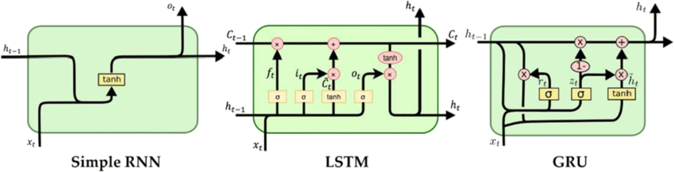

The paper compares different recurrent units in RNNs—LSTMs and GRUs—with the hypothesis that specialized units outperform vanilla RNNs.
Decades ago, Recurrent Neural Networks (RNNs) were proposed for handling variable-length sequential input through a shared hidden state. However, practical limitations arose due to vanishing and exploding gradient problems during training. The introduction of the long-short term memory (LSTM) recurrent unit addressed these challenges by confidently capturing long-term dependencies.
Subsequently, the Gated Recurrent Unit (GRU) emerged with a similar goal of tracking long-term dependencies while addressing gradient problems. LSTMs employ input, forget, and output gates, while GRUs use a reset gate and an update gate. Both retain memory from prior activations, allowing preservation of features for extended periods and reducing the risk of the vanishing gradient problem.
Designed for sequence modeling, RNNs capture information from past inputs for current predictions. However, the vanishing gradient problem limits their ability to capture long-term dependencies. A technology that emerged in the early 1980s, it is a model that was studied to help machines learn, understand, and produce human language, a goal of early artificial intelligence research. This required the processing of sequence data and was studied in order to respond to new input while remembering previous information. RNNs were the cornerstone of the current development of LSTMs, providing scalability to a wide range of applications. It is a model that has played a key role in the emergence of new models such as Transformer.
Specifically addressing the vanishing gradient problem, LSTMs have a complex structure enabling selective retention or forgetting of information in long sequences, making them effective for capturing long-term dependencies. A form of model that evolved from RNNs and is similarly used to process sequence data. It is structurally similar to an RNN, but overcomes the limitations of RNNs, which lack the ability to store and retain information over long periods of time through a much more complex computational process. In a structured LSTM cell, weights are passed through an input gate, forget gate, and output gate to determine whether to retain information over a long period of time.
Similar to LSTM but with a simpler structure, GRUs address the vanishing gradient problem. They use update and reset gates to control information flow, deciding how much past information to forget and how much new information to incorporate.
**image source: https://wikidocs.net/166316
In this experiment, the authors aimed to compare the performance of different types of recurrent neural network (RNN) units, specifically Long Short-Term Memory (LSTM) units, Gated Recurrent Units (GRUs), and traditional tanh units. The primary objective was to conduct a fair comparison by ensuring that each model had approximately the same number of parameters. The models were intentionally kept small to avoid overfitting, which could potentially impact the comparison.
Model Configuration:Sizes of Models: The authors trained three models for each task, each using LSTM, GRU, or tanh units. The sizes of these models were chosen to have roughly the same number of parameters.
Training Techniques: The models were trained using RMSProp, and weight noise with a fixed standard deviation of 0.075 was applied. The norm of the gradient was rescaled to 1 at every update to prevent exploding gradients.
Learning Rate Selection: The learning rate was selected to maximize validation performance out of 10 randomly chosen log-uniform candidates.
Results:The results were presented in terms of negative log-probabilities on different music datasets (Nottingham, JSB Chorales, MuseData, Piano-midi) and Ubisoft datasets (Ubisoft A and Ubisoft B). The performance of each model was evaluated on both training and test sets.
Music Datasets:The GRU-RNN outperformed LSTM-RNN and tanh-RNN on most music datasets, except for Nottingham where the performance was comparable among the three models.
Both GRU-RNN and LSTM-RNN outperformed tanh-RNN on the Ubisoft datasets. LSTM-RNN performed better on Ubisoft A, while GRU-RNN performed better on Ubisoft B.
Advantages of Gating Units: The results indicated that RNNs with gating units (GRU-RNN and LSTM-RNN) generally outperformed the more traditional tanh-RNN. Gating units led to faster convergence and better final solutions.
Comparison of LSTM and GRU: The study did not provide conclusive evidence regarding the superiority of either LSTM or GRU, suggesting that the choice of the gated recurrent unit may heavily depend on the specific dataset and task.
Learning Curves: Visualizing the learning curves revealed that GRU-RNN made faster progress in terms of the number of updates and actual CPU time, particularly evident in the music datasets. Tanh-RNN, while computationally more efficient per update, struggled to make significant progress in the Ubisoft datasets.
The reduced model computing and learning time associated with GRUs enable companies to develop cost-effective natural language processing (NLP) models. This reduction in costs makes advanced language processing technology more accessible, allowing a broader range of companies to implement and deploy language models without prohibitive expenses.
The cost reduction facilitated by these recurrent neural networks enables companies to offer substitutes for expensive models. This increase in affordability leads to a greater variety of choices and enhanced convenience for users. Users can access a wider range of applications and services based on advanced language processing models.
LSTMs are known to perform well with complex data and long sequences. However, if the output of LSTMs is less accurate, it can be unreliable for users relying on models for specialized tasks. For applications where precision and reliability are crucial, such as medical diagnoses or critical decision-making, inaccuracies in LSTM outputs can have significant consequences.
Fewer parameters due to a simple network structure means inducing low costs. Faster training time and lower memory requirements make it possible to produce alternative models for companies that cannot build large models.
The GRU can be applied to sequence data of various types, offering similar performance to LSTM, but with cost-saving benefits.
Optionally, in addition to a reading-based analysis, implement the ideas of the paper in code, and report on your findings.
Originality: 6/10
The paper offers a valuable empirical comparison of LSTM, GRU, and tanh units in sequence modeling tasks, particularly in polyphonic music and raw speech signal datasets. While not entirely groundbreaking, the study provides a novel contribution by evaluating and comparing these units across diverse datasets. Related work is appropriately referenced.
Quality: 8/10
The paper exhibits technical soundness through well-designed experiments, employing a fixed parameter approach. The methodology is comprehensive, covering polyphonic music and speech signal modeling with appropriate metrics. The authors transparently acknowledge study limitations, notably the lack of a conclusive LSTM vs. GRU comparison.
Clarity: 7/10
While generally well-written, there's room for enhanced clarity, especially in task and dataset explanations. Minor improvements in transitions, particularly in the conclusion, would enhance readability.
Significance: 7/10
The paper's significance lies in practical implications for choosing recurrent units. The demonstrated advantages of GRU over traditional tanh units provide valuable insights for researchers and practitioners. Inclusion of diverse datasets enhances relevance.
Overall : 7/10
Originality: 7/10
This paper provides a valuable empirical comparison between LSTM and GRU models, comparing their efficiency in terms of computational complexity and learning time. Although the superiority of LSTMs is already widely recognized, this study aims to contribute to the literature by demonstrating the efficiency and cost-effectiveness of GRU models.
Quality: 6/10
The study pointed out to compare the performance of LSTM and GRU models using multiple datasets to demonstrate that the GRU model performs similarly to the LSTM model, however, due to time limitations, many datasets were not utilized.
Clarity: 8/10
The purpose of this study is to evaluate the performance of LSTM and GRU models and determine whether the GRU model, which has a cost advantage, performs similarly to LSTM. With more references and datasets for comparison, the objective of the study would be more clear.
Significance: 8/10
This paper is as not much as important if company have enough resources to utilize LSTM models, as it simply demonstrates the cost-effectiveness of using an alternative model to LSTM.
Overall : 8/10
[1] Léon Bottou and Patrick Gallinari. A framework for the cooperation of learning algorithms. Advances in neural information processing systems 3 (1990).
Hwijong Im
Aishwarya Nagendra Kumar